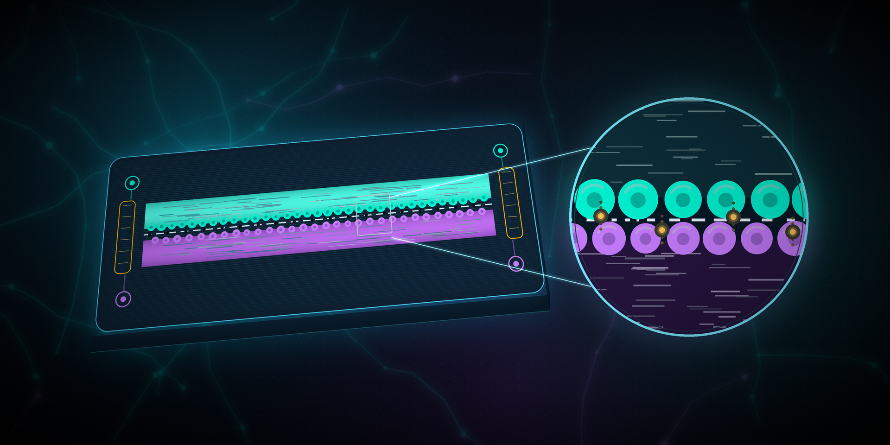

← Tüm yazılar Tıp & Klinik Biyomühendislik Çip Üstünde Bir Organ: Organ-on-a-Chip Nedir, Nasıl Yapılır? Sema Nur Bozdağ 12 Temmuz 2026 7 dk okuma  Bunları da okuyabilirsiniz SciPeak ← Ana sayfaya dön